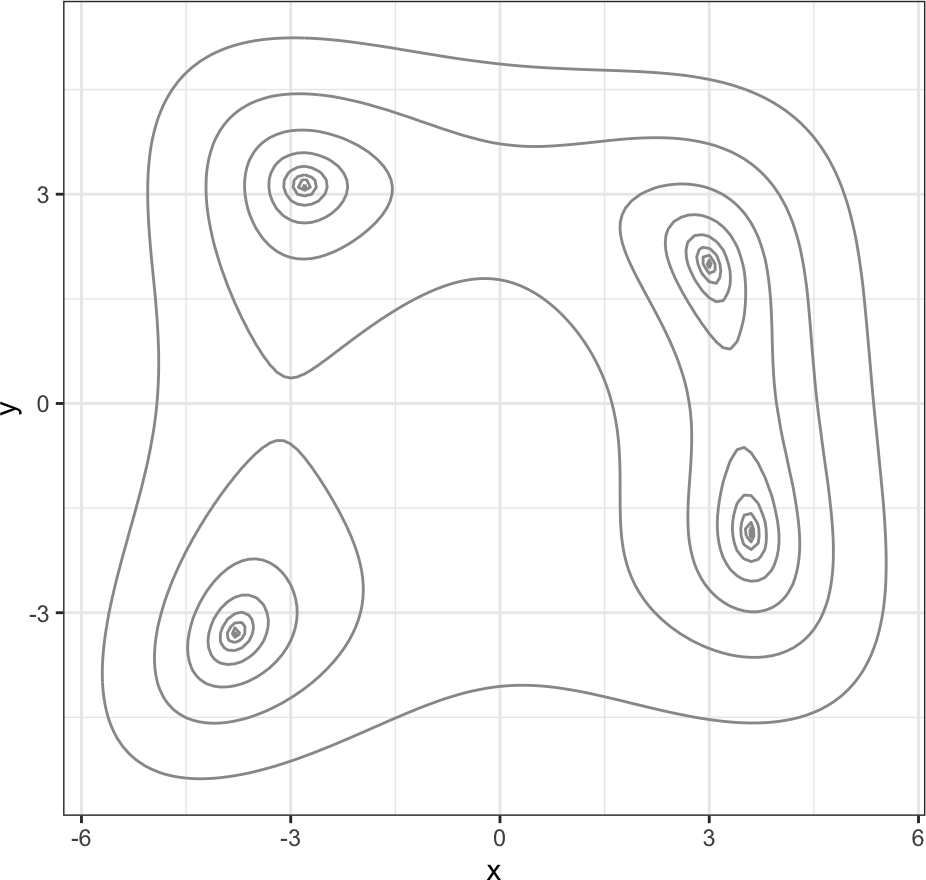
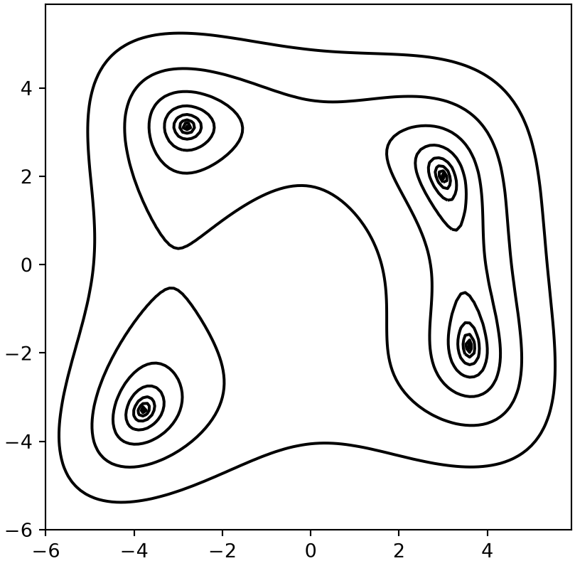
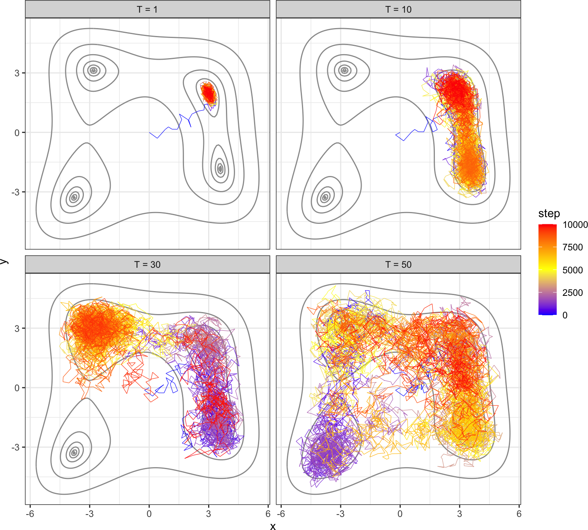
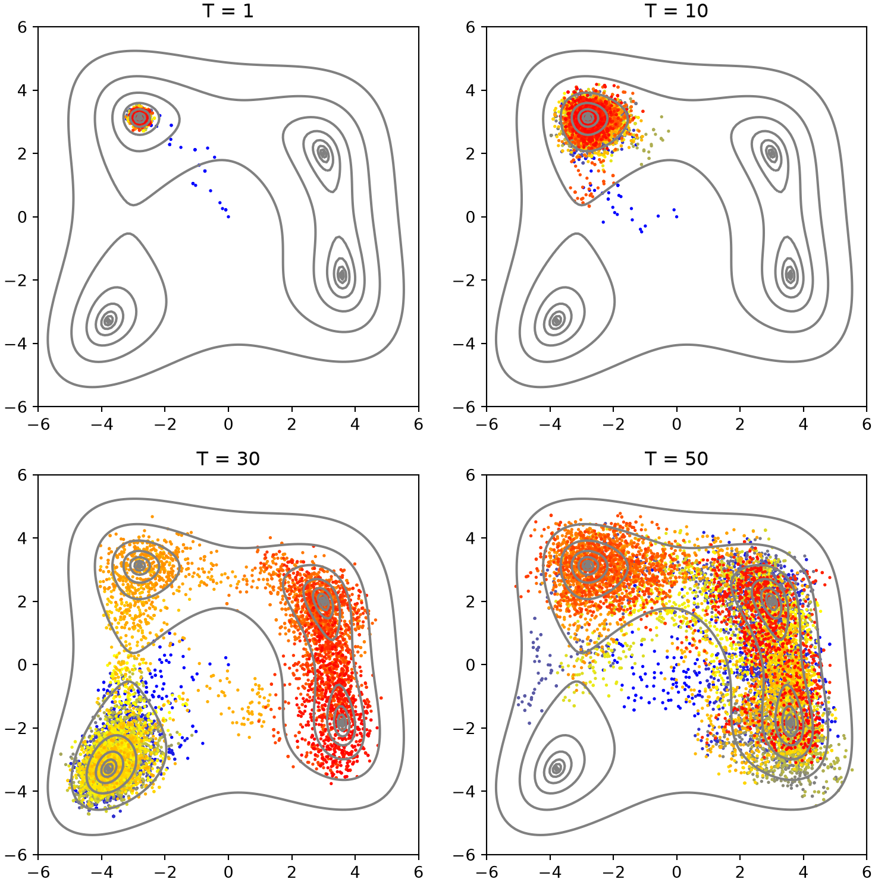
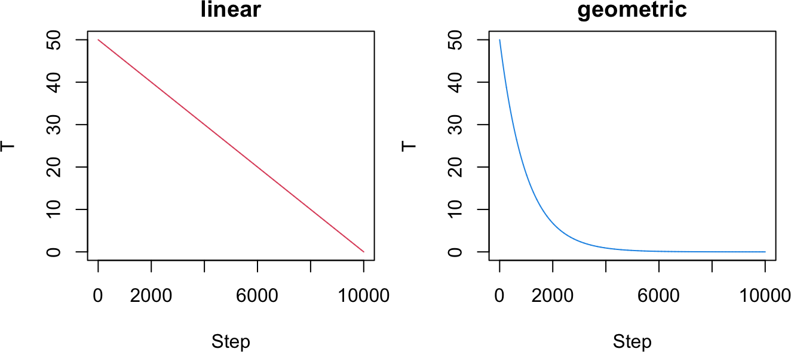
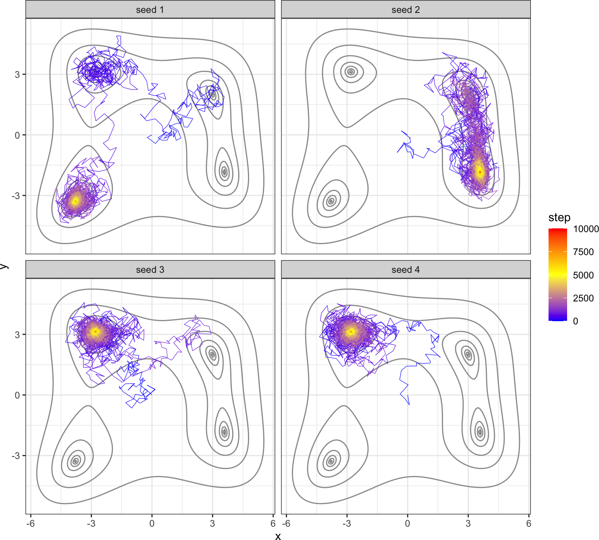
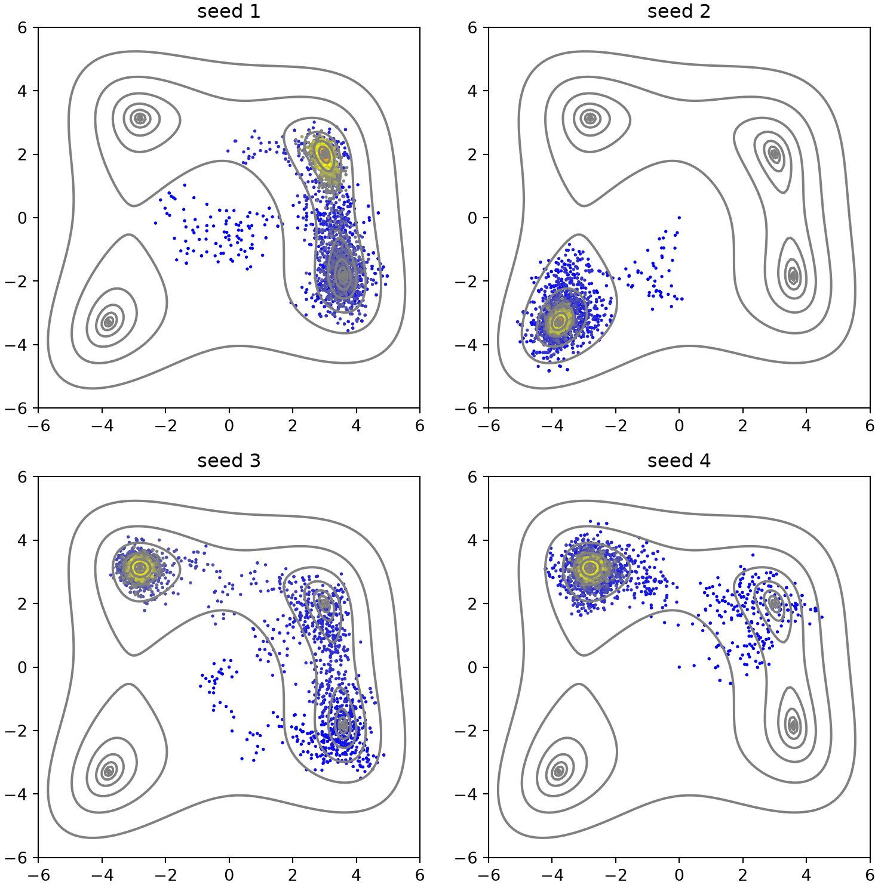

The Metropolis-Hastings algorithm of Part 8B samples a probability distribution efficiently, but it struggles as a global optimizer. Treating a cost function \(f\) as an energy and sampling the Boltzmann distribution \(P \propto e^{-f/T}\), the acceptance probability
\[ a = \min\left(1, e^{-(f_{x'} - f_x)/T}\right) \tag{1} \]
becomes tiny at low temperature \(T\). When \(f\) has several local minima, a low-\(T\) chain gets trapped in one basin and rarely crosses the barriers to the others, while a high-\(T\) chain crosses barriers freely but never settles into any minimum. This chapter develops MCMC methods that overcome this trade-off: simulated annealing, parallel tempering, and simulated tempering.
9A.1 The Himmelblau test function
We use Himmelblau’s function (Himmelblau 1972), a standard optimization benchmark,
It has four well-separated local minima, all with \(f = 0\), which makes it a good stage for methods that must find or sample multiple basins.
R implementation
library(ggplot2)f_Himmelblau <-function(x) (x[1]^2+ x[2] -11)^2+ (x[1] + x[2]^2-7)^2# contour of the landscape, reused as a background throughout the chaptergrid_df <-expand.grid(x =seq(-6, 6, 0.1), y =seq(-6, 6, 0.1))grid_df$z <-apply(grid_df, 1, f_Himmelblau)base_contour <-function()list(geom_contour(data = grid_df, aes(x, y, z = z), breaks =10^seq(-2, 2.5, 0.5),colour ="grey60"),scale_colour_gradientn(colours =c("blue", "yellow", "red"), name ="step"),coord_fixed(), theme_bw())ggplot() +base_contour()

Python implementation
import numpy as npimport matplotlib.pyplot as pltfrom matplotlib.colors import LinearSegmentedColormapdef f_Himmelblau(x):return (x[0]**2+ x[1] -11)**2+ (x[0] + x[1]**2-7)**2# contour of the landscape, reused as a background throughout the chaptergx = np.arange(-6, 6, 0.1)XX, YY = np.meshgrid(gx, gx); ZZ = f_Himmelblau([XX, YY])BYR = LinearSegmentedColormap.from_list("byr", ["blue", "yellow", "red"])def plot_traj(ax, x, title=""): ax.contour(XX, YY, ZZ, levels=10**np.arange(-2, 3, 0.5), colors="grey") ax.scatter(x[:, 0], x[:, 1], c=np.arange(len(x)), cmap=BYR, s=1) ax.set(title=title, xlim=(-6, 6), ylim=(-6, 6), aspect="equal")fig, ax = plt.subplots(figsize=(5, 5))ax.contour(XX, YY, ZZ, levels=10**np.arange(-2, 3, 0.5), colors="black")ax.set_aspect("equal"); plt.show()

The four basins sit roughly at the corners of the plotted region.
9A.2 Metropolis-Hastings sampling
We first apply plain Metropolis-Hastings at several fixed temperatures. Each step proposes a small uniform displacement and accepts it with probability given by Equation (1). The mh function also returns its acceptance rate, which we reuse in the parallel-tempering method below.
NoteRecipe 9A.2.1
Objective. Explore a multi-minimum landscape with Metropolis-Hastings at fixed temperature.
Model. Himmelblau’s function f(x, y) = (x^2 + y - 11)^2 + (x + y^2 - 7)^2, which has four equal minima at f = 0.
Method. The Metropolis-Hastings algorithm at fixed temperature, with a uniform proposal displacement and acceptance a = min(1, exp(-de/T)).
Test. Start at (0, 0), 1e4 steps, step size 0.5, temperatures T = 1, 10, 30, 50; seed 1 per temperature.
Show. The sampled points at each temperature on the Himmelblau landscape.
Verification. No single temperature both explores widely and settles: T = 1 traps in one basin, while T = 50 roams but never pins a minimum.
# sample at four temperatures, each starting from the originnstep <-10^4traj_all <-do.call(rbind, lapply(c(1, 10, 30, 50), function(temp) {set.seed(1) r <-mh(2, f_Himmelblau, c(0, 0), nstep, dx_max =0.5, temp = temp)data.frame(x = r$x[, 1], y = r$x[, 2], step =0:nstep, temp =paste0("T = ", temp))}))traj_all$temp <-factor(traj_all$temp, levels =paste0("T = ", c(1, 10, 30, 50)))ggplot() +base_contour() +geom_path(data = traj_all, aes(x, y, colour = step), linewidth =0.2) +facet_wrap(~temp)

Python implementation
# Metropolis-Hastings sampler for a cost function funcdef mh(n, func, x0, nstep, dx_max, temp, ifprint=False): x = np.zeros((nstep +1, n)); e = np.zeros(nstep +1) x[0] = x0; e[0] = func(x0); num_accept =0for i inrange(nstep): xnew = x[i] + np.random.uniform(-dx_max, dx_max, n) de = func(xnew) - e[i]if de <0or np.random.rand() < np.exp(-de / temp): x[i +1] = xnew; e[i +1] = e[i] + de; num_accept +=1else: x[i +1] = x[i]; e[i +1] = e[i] rate = num_accept / nstepif ifprint:print("acceptance rate", rate)return {"x": x, "e": e, "rate": rate}
# sample at four temperatures, each starting from the originnstep =10**4fig, axs = plt.subplots(2, 2, figsize=(8, 8))for ax, temp inzip(axs.flat, (1, 10, 30, 50)): np.random.seed(1) r = mh(2, f_Himmelblau, np.zeros(2), nstep, dx_max=0.5, temp=temp) plot_traj(ax, r["x"], f"T = {temp}")plt.tight_layout(); plt.show()

At \(T = 1\) the chain is trapped in the single basin it first reaches. As \(T\) rises it explores more of the landscape, sampling several basins by \(T = 50\), but then it no longer settles cleanly into any minimum. No single fixed temperature both explores widely and pins down a minimum.
9A.3 Simulated annealing
Simulated annealing (SA) resolves the trade-off by lowering the temperature during a single run (Kirkpatrick et al. 1983). It starts hot enough to roam across all basins and cools toward zero to settle into a minimum. Two common cooling schedules are a linear decrease and a geometric decrease (multiplying \(T\) by a factor just below 1 each step); the geometric schedule spends more steps at low temperature and usually converges faster. We fold both into one function.
NoteRecipe 9A.3.1
Objective. Find a global minimum by cooling a Metropolis chain.
Model. Himmelblau’s function f(x, y) = (x^2 + y - 11)^2 + (x + y^2 - 7)^2, which has four equal minima at f = 0.
Method. Simulated annealing, lowering the temperature during a single run on a geometric (or linear) cooling schedule with Metropolis acceptance.
Test. Start at (0, 0), 1e4 steps, step size 0.5, maximum temperature 50, geometric schedule (scaling 0.999); four runs with seeds 1 to 4.
Show. The path of each annealing run on the landscape, and the best value over steps.
Verification. Each run cools from a broad search into a single minimum, but which minimum depends on the random path, so different seeds land in different basins.
R implementation
# simulated annealing with a linear or geometric cooling schedulesa <-function(n, func, nstep, dx_max, temp_max, schedule ="geometric", scaling =0.999) { t <-if (schedule =="linear") seq(temp_max, 0, length.out = nstep +1)else temp_max * scaling^(0:nstep) x <-matrix(0, nstep +1, n); e <-numeric(nstep +1); e[1] <-func(x[1, ])for (i in1:nstep) { xnew <- x[i, ] +runif(n, -dx_max, dx_max) de <-func(xnew) - e[i]if (de <0||runif(1) <exp(-de / t[i])) { x[i +1, ] <- xnew; e[i +1] <- e[i] + de } else { x[i +1, ] <- x[i, ]; e[i +1] <- e[i] } }list(x = x, e = e, t = t)}
# the two cooling schedulesnstep <-10^4par(mfrow =c(1, 2), mar =c(4, 4, 2, 1))plot(seq(50, 0, length.out = nstep +1), type ="l", col =2, xlab ="Step",ylab ="T", main ="linear")plot(50*0.999^(0:nstep), type ="l", col =4, xlab ="Step", ylab ="T", main ="geometric")

# four independent geometric-cooling runs; different seeds land in different minimatraj_all <-do.call(rbind, lapply(1:4, function(seed) {set.seed(seed) r <-sa(2, f_Himmelblau, nstep, dx_max =0.5, temp_max =50, scaling =0.999)data.frame(x = r$x[, 1], y = r$x[, 2], step =0:nstep, seed =paste0("seed ", seed))}))ggplot() +base_contour() +geom_path(data = traj_all, aes(x, y, colour = step), linewidth =0.2) +facet_wrap(~seed)

Python implementation
# simulated annealing with a linear or geometric cooling scheduledef sa(n, func, nstep, dx_max, temp_max, schedule="geometric", scaling=0.999):if schedule =="linear": t = np.linspace(temp_max, 0, nstep +1)else: t = temp_max * scaling**np.arange(nstep +1) x = np.zeros((nstep +1, n)); e = np.zeros(nstep +1); e[0] = func(x[0])for i inrange(nstep): xnew = x[i] + np.random.uniform(-dx_max, dx_max, n) de = func(xnew) - e[i]if de <0or np.random.rand() < np.exp(-de / t[i]): x[i +1] = xnew; e[i +1] = e[i] + deelse: x[i +1] = x[i]; e[i +1] = e[i]return {"x": x, "e": e, "t": t}
# four independent geometric-cooling runs; different seeds land in different minimafig, axs = plt.subplots(2, 2, figsize=(8, 8))for ax, seed inzip(axs.flat, (1, 2, 3, 4)): np.random.seed(seed) r = sa(2, f_Himmelblau, nstep, dx_max=0.5, temp_max=50, scaling=0.999) plot_traj(ax, r["x"], f"seed {seed}")plt.tight_layout(); plt.show()

Each run cools from a broad high-temperature search (blue) into one minimum (red), but which minimum depends on the random path, so different seeds find different basins. Because SA does not guarantee the global optimum, one typically runs it many times and keeps the best result.
9A.4 Parallel tempering
Parallel tempering (PT), or replica exchange (Hukushima and Nemoto 1996), runs several chains at once, each at its own fixed temperature, and periodically proposes to swap the coordinates of two replicas. Hot replicas cross barriers and feed configurations down to cold replicas, which refine them in the minima. A swap between replicas \(i\) and \(j\) is accepted with
which preserves detailed balance so every replica still samples the Boltzmann distribution at its own temperature. We generalize to any number of replicas, running the mh sampler on each between swaps and only swapping adjacent temperatures (in alternating even/odd rounds for ergodicity).
NoteRecipe 9A.4.1
Objective. Sample every basin in one run by exchanging replicas across temperatures.
Model. Himmelblau’s function f(x, y) = (x^2 + y - 11)^2 + (x + y^2 - 7)^2, which has four equal minima at f = 0.
Method. Parallel tempering (replica exchange): run a Metropolis chain at each of several temperatures and swap adjacent-temperature replicas with acceptance a = min(1, exp((f_i - f_j)*(1/T_i - 1/T_j))).
Test. 6 replicas at T = 2.3, 5, 10, 20, 40, 80 with step sizes 0.3 to 2.5, all started at the origin, 100 swap rounds of 100 steps; seed 1.
Show. The sampled points of the coldest and hottest replicas on the landscape.
Verification. The coldest replica stays inside minima yet still hops between them via configurations passed down from hotter replicas, while the hottest roams the whole landscape.
The coldest replica (\(T = 2.3\)) stays tightly inside minima yet still hops between them, thanks to configurations passed down from the hotter replicas, while the hottest (\(T = 80\)) roams over the whole landscape. Monitoring the swap acceptance rate helps choose the temperature spacing: if adjacent temperatures are too far apart, swaps are rarely accepted and more replicas are needed.
9A.5 Simulated tempering
Simulated tempering (ST) achieves a similar effect with a single chain whose temperature itself performs a random walk over a discrete ladder \(T_1 < \dots < T_{n_\text{temp}}\)(Marinari and Parisi 1992). A mixing parameter \(\alpha\) sets the fraction of steps spent moving in space (ordinary MH at the current temperature) versus moving in temperature. A proposed temperature change to \(T'\) is accepted with
where the weights \(c\) bias how often each temperature is visited (larger weights at low temperature emphasize refining minima). The weights would be the partition functions to sample all temperatures equally, but since those are unknown we choose them by hand.
NoteRecipe 9A.5.1
Objective. Cross barriers and settle into minima within one chain by letting the temperature wander.
Model. Himmelblau’s function f(x, y) = (x^2 + y - 11)^2 + (x + y^2 - 7)^2, which has four equal minima at f = 0.
Method. Simulated tempering: a single chain whose temperature random-walks a discrete ladder, with temperature moves accepted as a = min(1, (c'/c)*exp(-f*(1/T' - 1/T))).
Test. Start at (0, 0), 1e4 steps, mixing fraction 0.9, step size 1, a 16-rung ladder T = 5, 10, ..., 80 with weights decreasing linearly from 5 to 1; seed 1.
Show. The single chain’s path over the landscape and its temperature over steps.
Verification. Because the temperature wanders up and down, one trajectory both crosses barriers when hot and settles into minima when cold, visiting all four basins.
Because the temperature wanders up and down, a single ST trajectory both crosses barriers (when it is hot) and settles into minima (when it is cold), visiting all four basins in one run. Unlike simulated annealing, which ends cold and stops, simulated tempering keeps sampling, and unlike parallel tempering it needs only one chain.
Himmelblau, David M. 1972. Applied Nonlinear Programming. McGraw-Hill.
Hukushima, Koji, and Koji Nemoto. 1996. “Exchange Monte Carlo Method and Application to Spin Glass Simulations.”Journal of the Physical Society of Japan 65 (6): 1604–8. https://doi.org/10.1143/JPSJ.65.1604.
Kirkpatrick, Scott, C. Daniel Gelatt, and Mario P. Vecchi. 1983. “Optimization by Simulated Annealing.”Science 220 (4598): 671–80. https://doi.org/10.1126/science.220.4598.671.
Marinari, Enzo, and Giorgio Parisi. 1992. “Simulated Tempering: A New Monte Carlo Scheme.”Europhysics Letters 19 (6): 451–58. https://doi.org/10.1209/0295-5075/19/6/002.